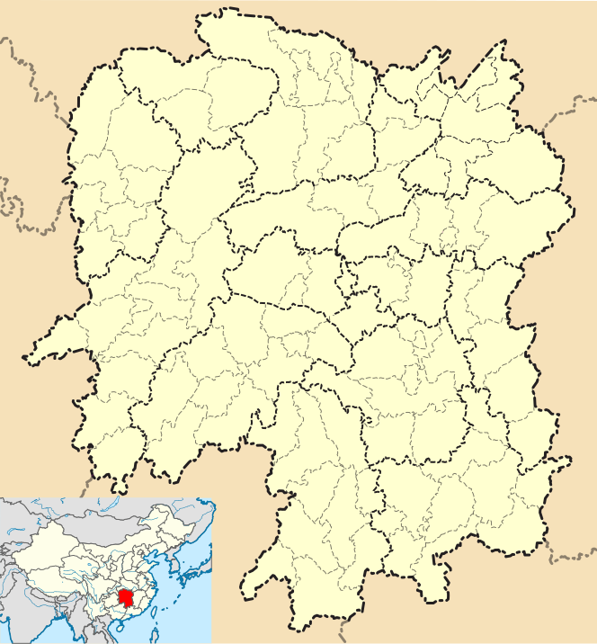
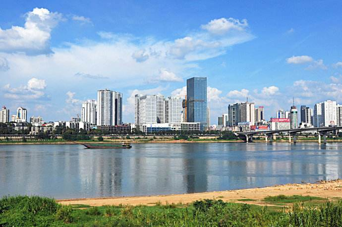

Chicago, IL wyou2@hawk.iit.edu
Hi, My name is You Wu. Currently studying at Illinois Institute of Technology.
I have never studied in IT, hope I could learn more about IT from this course.
I come from Zhuzhou Hunan, China.
Zhuzhou, formerly Jianning, is a prefecture-level city of Hunan Province, China, a little to the southeast of Changsha and bordering Jiangxi to the east. It is part of the "Changzhutan Golden Triangle" (comprising the cities of Changsha, Zhuzhou and Xiangtan). The city has jurisdiction over 5 counties (Yanling, Chaling, Youxian, Liling, Zhuzhou) and four districts (Hetang, Lusong, Shifeng and Tianyuan, a high-tech industrial development zone).
I live in Zhuzhou for 14 years, before I came to the United States.
